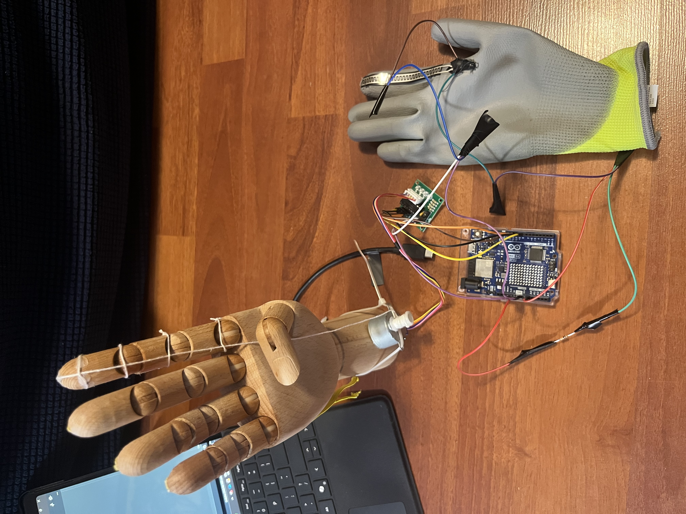
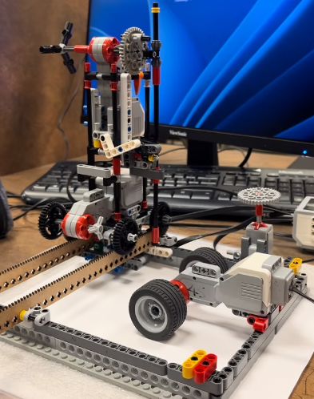
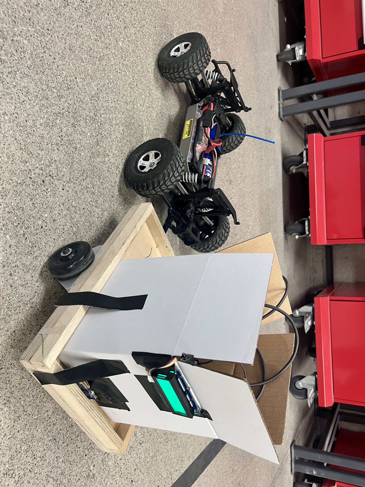
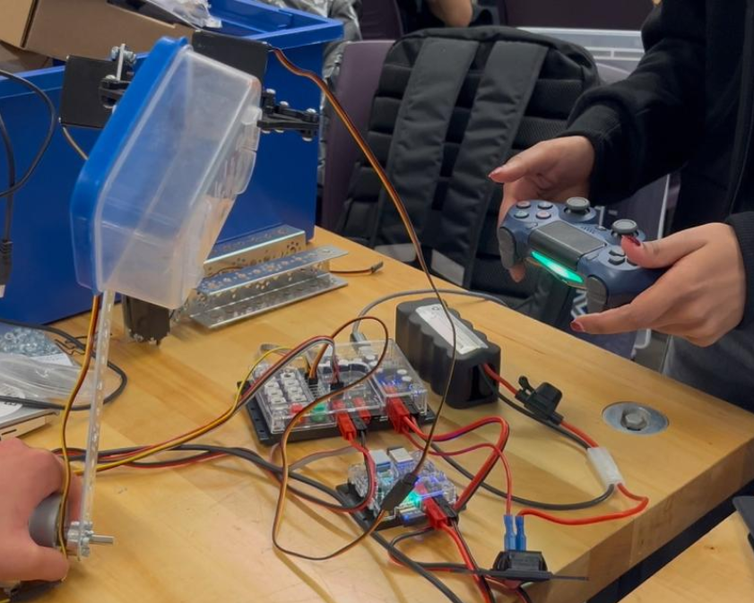
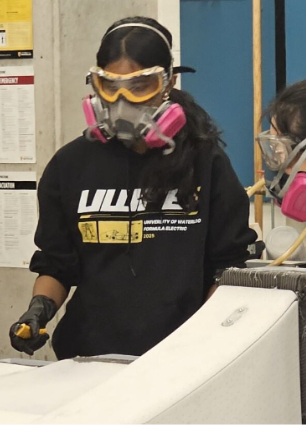
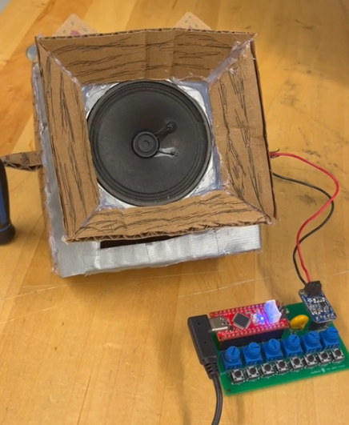

Khajani
Sivapala
Mechatronics Engineering
University of Waterloo
- FOCUS
- Medtech · Robotics · Programs
- STATUS
- Incoming Tesla, F26
- ID
- MK-01
Mechatronics Engineering
University of Waterloo
INCOMING: EQUIPMENT ENGINEER, TESLA | F26
01 / EXPERIENCE


Certifications: Lean Six Sigma · WHMIS · UW Engineering Machine Shop Training
02 / PROJECTS
Click any project to open its photos and videos.

MK-01MedtechRobotics
Tendon-driven robotic hand controlled in real time through a flex-sensor glove, built with servo motors and an Arduino.
Photos & videos ↗ Code on GitHub

MK-02AccessibilityRobotics
Low-cost, portable CNC-style braille printer for schools, built from LEGO EV3, servos, laser-cut racks, and foam paper.
Photos & videos ↗ Code on GitHub

MK-03SystemsSafety
Real-time monitoring for nuclear waste transport using an Arduino Uno R4 WiFi and sensors, sending live telemetry to ThingSpeak and simulating radiation and fire detection.
Photos & videos ↗ Code on GitHub

MK-04ProcessMechanical
Automated guided vehicle for dual-mode door and box transport with safe warehouse navigation. Custom 3D-printed grippers designed in SolidWorks, plus a lift system with DC motors and servos.
Photos & videos ↗ Code on GitHub

MK-05HardwareTeam
Carbon fiber layup for the undertray core, and steel chassis components machined to tight tolerances.
Photos & videos ↗

MK-06EmbeddedDesign
Cardboard speaker built around a Seeeduino Nano and amplifier. The conical face and octagonal chamber were designed to maximize volume and direction. Recognized for creativity and performance.
Photos & videos ↗ Code on GitHub